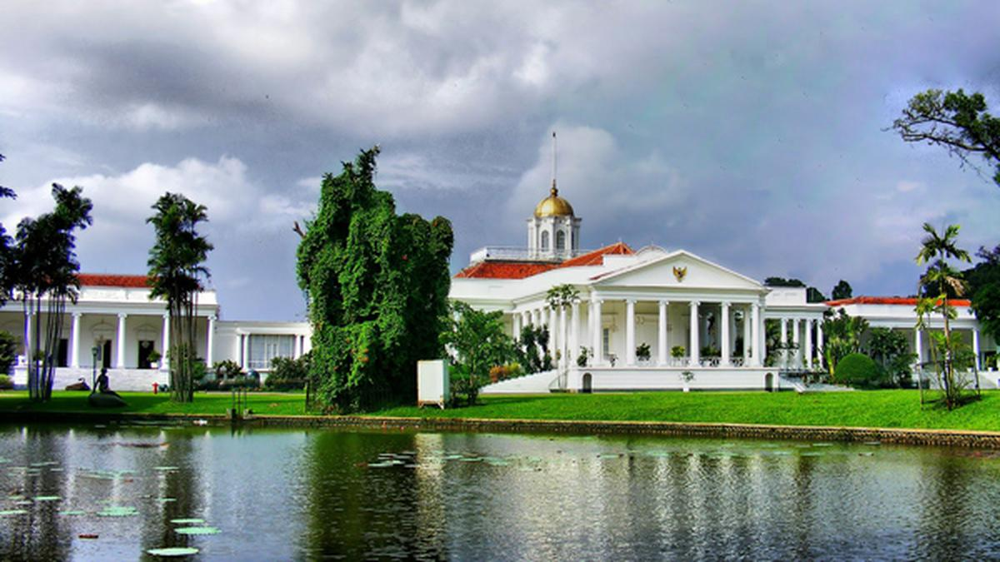
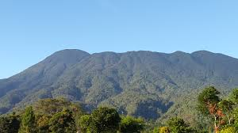
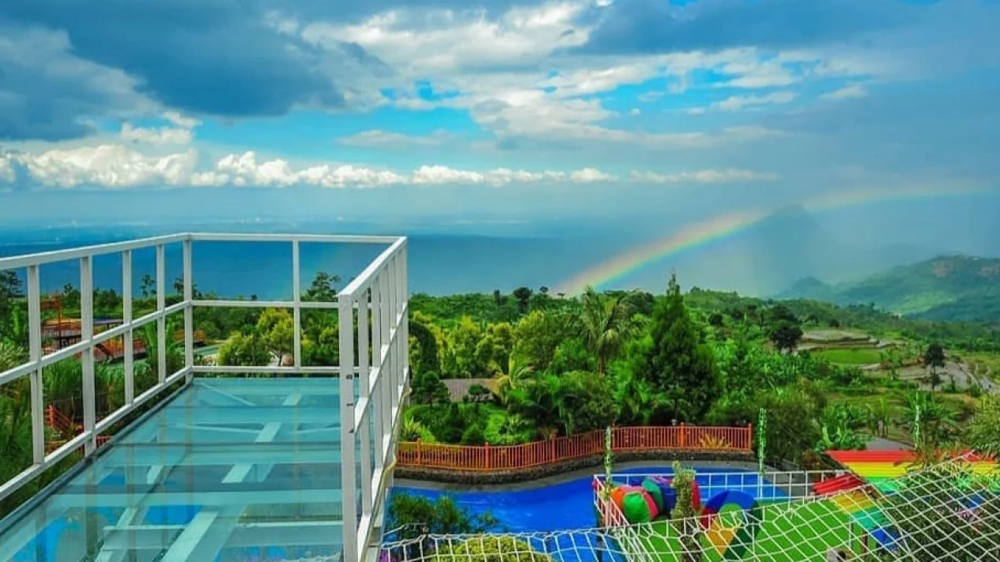
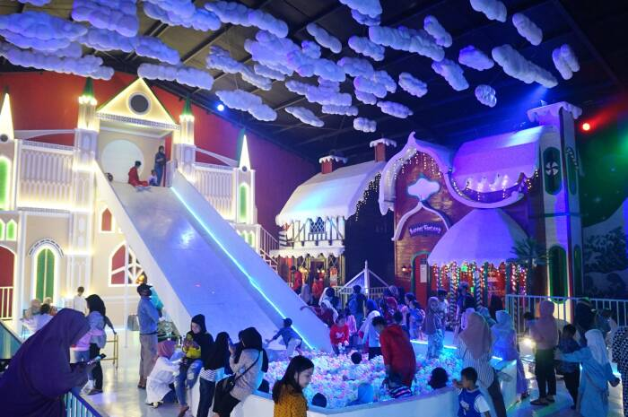
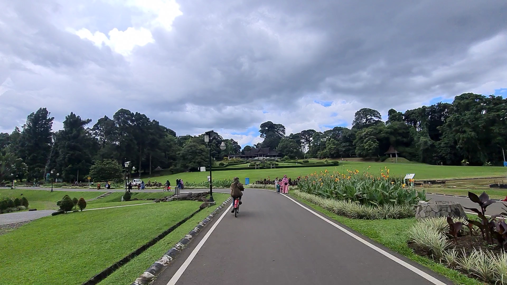

Sejarah

Kota Bogor memiliki sejarah yang panjang dan kaya, mulai dari masa prakolonial hingga zaman modern. Berikut adalah beberapa fakta sejarah Kota Bogor:
Asal-usul nama
Nama Bogor memiliki beberapa versi, di antaranya:
-
Dari kata Belanda "Buitenzorg" yang berarti "tempat yang damai yang jauh dari segala hiruk pikuk". Nama ini menunjukkan peran awal Kota Bogor sebagai tempat peristirahatan.
-
Dari kata "baghar" atau "baaqar" yang berarti sapi, karena di Kebun Raya Bogor ada sebuah patung sapi.
-
Dari kata "Bokor" yang berarti tunggul pohon enau (kawung).
-
Dari kata "Hoofd Van de Negorij Bogor" yang berarti kurang lebih Kepala Kampung Bogor.
Cikal bakal Bogor
Bogor berawal dari Parung Angsana atau kampung baru yang dibangun oleh Tanujiwa pada tahun 1689–1705.
Masa kolonial Belanda
Pada masa penjajahan Belanda, Kota Bogor disebut dengan nama Buitenzorg.
Setelah kemerdekaan
Setelah pengakuan kedaulatan Indonesia, Kota Bogor mengalami beberapa perubahan nama, yaitu Kota Besar Bogor, Kota Praja Bogor, dan Kotamadya Daerah Tingkat II Bogor.
Pusat riset botani dan pertanian
Kota Bogor memiliki kekhasan iklim lokal yang menjadikan Bogor sebagai pusat riset botani serta pertanian nasional.
Gelar The Most Lovable City
Pada tahun 2016, Kota Bogor berhasil menyabet gelar predikat The Most Lovable City sedunia yang diselenggarakan oleh WWF (World Wildlife Fund).
Geografis

Kota Bogor
Terletak di antara 106°43'30”BT–106°51'00”BT dan 6°30'30”LS – 6°41'00”LS. Kota Bogor memiliki ketinggian rata-rata minimal 190 meter dan maksimal 350 meter. Kota Bogor terdiri dari 6 kecamatan, yaitu Kecamatan Bogor Selatan, Bogor Utara, Bogor Timur, Bogor Barat, Bogor Tengah, dan Tanah Sareal.
Kabupaten Bogor
Terletak di antara 6º18”0” – 6º47”10” Lintang Selatan dan 106º23”45”- 107º13”30' Bujur Timur. Kabupaten Bogor memiliki luas 2.664 kilometer persegi. Kabupaten Bogor berbatasan dengan Kabupaten Tangerang, Kota Tangerang, Kota Depok, dan Kabupaten Bekasi di sebelah utara. Di sebelah selatannya berbatasan dengan Kabupaten Sukabumi dan Kabupaten Cianjur. Di sebelah baratnya ada batas berupa Kabupaten Lebak. Di sebelah timurnya berbatasan dengan Kabupaten Cianjur, Karawang, dan Purwakarta.
Wisata
Kota Bogor terkenal sebagai destinasi wisata yang menawarkan berbagai tempat menarik untuk dikunjungi. Kota ini sangat cocok untuk berlibur bersama keluarga dan menawarkan pengalaman alam yang menenangkan. Pastikan untuk mengecek informasi lebih lanjut sebelum mengunjungi.
Villa Khayangan

Villa Khayangan adalah tempat wisata sekaligus penginapan yang terletak di kawasan Puncak Dua, Wargajaya, Kecamatan Sukamakmur, Kabupaten Bogor, Jawa Barat.
Menawarkan pemandangan yang eksotis, tempat wisata di Bogor ini cocok untuk dikunjungi saat ingin melepas penat.
Villa Khayangan menjadi tempat wisata di Bogor yang asyik sebagai spot foto karena memiliki latar berupa pegunungan dan lembah hijau.
Udaranya yang sejuk khas pegunungan dan pemandangan yang masih alami membuat pikiran menjadi lebih segar.
Fasilitas yang ada di Villa Khayangan Bogor ini sudah lumayan lengkap.
Disamping itu juga terdatap kolam renang dengan air yang dingin karena berada di ketinggian.
Fantasy Land

Salah satu tempat wisata Bogor yang populer di kawasan Puncak yaitu Fantasy Land.
Rekomendasi tempat wisata Bogor ini merupakan salah satu wahana permainan yang ada di kawasan The Ranch Puncak.
Fantasy Land bisa menjadi tempat wisata di Bogor yang bisa kamu kunjungi bersama keluarga maupun pasangan, karena di sini banyak sekali wahana serta spot foto yang instagramable.
Fantasy Land merupakan salah satu wahana di The Ranch Puncak yang memiliki bangunan yang berbentuk istana dengan luas kurang lebih 700 meter persegi yang dilengkapi dengan spot instagramable.
Fantasy Land memiliki banyak wahana menarik di dalamnya, Seluncuran dengan bola bola warna-warni, spot foto candy, dan untuk menambah kesan negeri dongeng tidak lupa di tambahkan kesan awan awan putih dan juga hujan salju.
Puncak Fantasy Land ini memiliki perosotan hingga 7 meter, selain itu juga sejumlah fun game yang bisa membuat liburan kamu bersama keluarga semakin seru.
Fantasy Land ini mengusung konsep wisata keluarga dengan memadukan sensasi negeri dongeng dan keseruan menggunakan sepatu roda berkeliling di dalam area wahana.
Kebun Raya Bogor

Kebun Raya Bogor atau Kebun Botani Bogor (bahasa Sunda: ᮊᮨᮘᮧᮔ᮪ ᮛᮚ ᮘᮧᮌᮧᮁ, translit. Kebon Raya Bogor) adalah sebuah kebun botani besar yang terletak di Kota Bogor, Indonesia.
Kebun ini dioperasikan oleh Badan Riset dan Inovasi Nasional (BRIN).
Kebun ini terletak di pusat kota Bogor dan bersebelahan dengan kompleks istana kepresidenan Istana Bogor.
Luasnya mencapai 87 hektar dan memiliki 15.000 jenis koleksi pohon dan tumbuhan. Letak geografis Bogor yang mengalami hujan hampir setiap hari bahkan di musim kemarau menjadikan kebun ini sebagai lokasi yang menguntungkan untuk budidaya tanaman tropis.
Didirikan pada tahun 1817 oleh pemerintah Hindia Belanda, Kebun Raya Bogor berkembang pesat di bawah kepemimpinan berbagai ahli botani terkenal termasuk Johannes Elias Teijsmann, Rudolph Herman Christiaan Carel Scheffer, dan Melchior Treub.
Sejak didirikan, Kebun Raya Bogor berfungsi sebagai pusat penelitian utama pertanian dan hortikultura, dan merupakan kebun raya tertua di Asia Tenggara.[1] Saat ini Kebun Raya Bogor ramai dikunjungi sebagai tempat wisata, terutama hari Sabtu dan Minggu serta hari libur. Tiket masuknya Rp 30.000.
Di sekitar Kebun Raya Bogor tersebar pusat-pusat keilmuan yaitu Herbarium Bogoriense, Museum Zoologi Bogor, dan PUSTAKA.